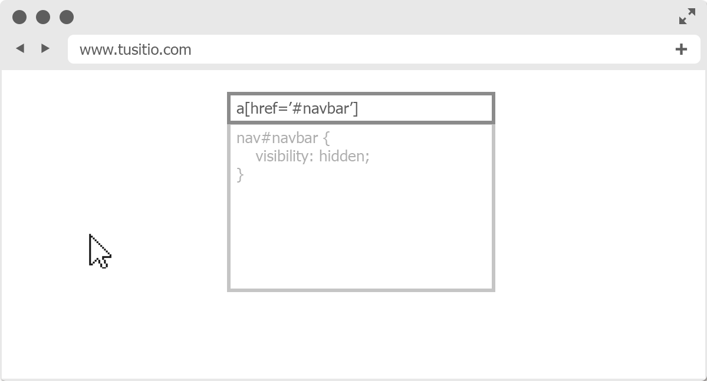
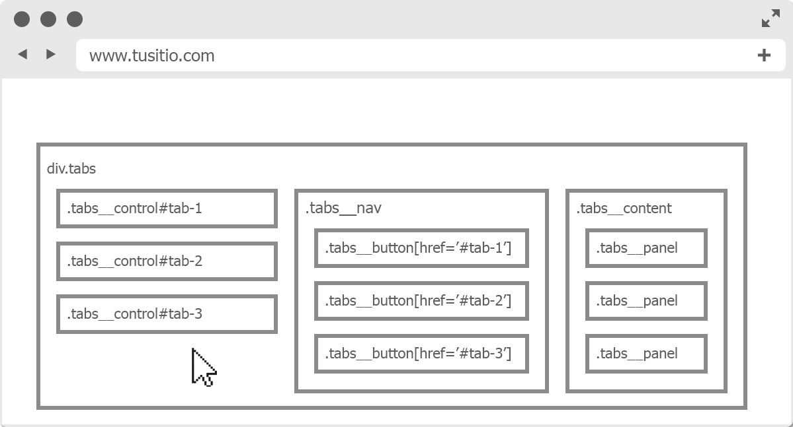
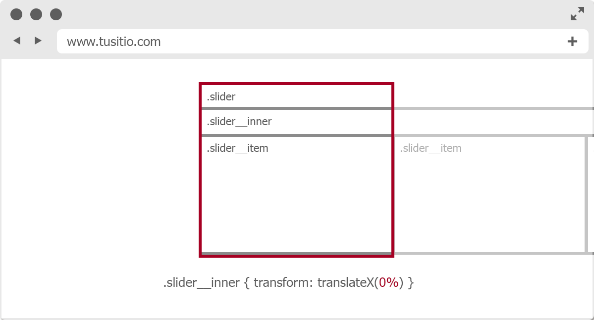
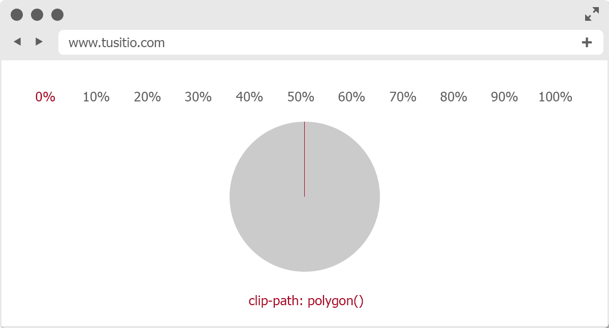

I can't believe it's CSS
Por qué deberías probarlo
- Siempre vas a tener que usar código CSS, aprovéchalo
- Es compatible con AMP
- Para animaciones sencillas, es más ligero que usar javascript
- Es muy raro que un usuario bloquee el uso de CSS
- Los scripts de terceros (y sus errores) no interferirán nunca con tus animaciones
- Se pueden hacer verdaderas preciosidades
Y además...
- Bootstrap/jQuery aparecen relacionados con todas las búsquedas de los ejemplos
- Los plugins para generar algunos "widgets" tipo sliders, incluso los más optimizados, producen código engorroso y muchas veces dependen de otras librerías
- Si no lo conoces, puede ser tu oportunidad para aprender CSS y, si te vienes arriba, Sass
Ojo con esto
- Nos vamos a centrar en animaciones sencillas porque hacer widgets complejos solo con CSS puede resultar interminable
- Hay algunas "soluciones" que son muy ñapa, como el famoso checkbox trick
- Siempre hay que poner por delante la accesibilidad y el sentido común
Dropdown list
Usando la pseudo-clase :target y la propiedad transition en los items
.dropdown__item {
height: 0;
overflow: hidden;
transition: height .05s ease-in-out;
}
.dropdown:target {
.dropdown__item {
height: 4rem;
}
}

See the Pen Dropdown pure CSS by Marta (@martarey) on CodePen.
Hamburger menu
Animamos el icono de forma sencilla
.navbar:target {
.navbar__bar {
&:nth-child(1) {
transform: rotate(45deg) scale(1.3055);
transform-origin: top left;
}
&:nth-child(4) {
transform: rotate(-45deg) scale(1.3055);
transform-origin: bottom left;
}
}
}
See the Pen Hamburger menu by Marta (@martarey) on CodePen.
Modal & floating labels
Con las pseudo-classes :focus y :placeholder-shown
input:focus ~ label,
input:not(:placeholder-shown) ~ label {
top: 0;
font-size: 1.2rem;
color: steelblue;
}
}See the Pen Modal & floating labels pure CSS by Marta (@martarey) on CodePen.
Tabs
Añadimos controles en la parte superior
<div class="tabs">
<span class="tabs__controls" id="tab-1"></span>
<span class="tabs__controls" id="tab-2"></span>
<span class="tabs__controls" id="tab-3"></span>
<span class="tabs__controls" id="tab-4"></span>
...
</div>

See the Pen Tabs pure CSS by Marta (@martarey) on CodePen.
Slider
Utilizamos transform: translateX(%) para el efecto slide
.slider__nav:target {
...
&:nth-child(2) {
~ .slider__inner {
transform: translateX(-100%);
}
}
...
}

See the Pen Slider pure CSS by Marta (@martarey) on CodePen.
Slider touch
Utilizamos scroll-snap-type y scroll-behavior para el efecto slide
.slider__inner {
...
overflow-x: auto;
scroll-snap-type: x mandatory;
scroll-behavior: smooth;
-webkit-overflow-scrolling: touch;
...
}
See the Pen Slider pure CSS | modern browsers by Marta (@martarey) on CodePen.
Progress circles
Utilizando @keyframes y clip-path: polygon()
clip-path: polygon(50% 50%, 50% 0, 87% 0, 87% 0,
87% 0, 87% 0, 87% 0);
...
@keyframes percent-10 {
0% {
@include percent-0;
}
100% {
@include percent-10;
}
}
See the Pen Progress circles by Marta (@martarey) on CodePen.
See the Pen Solar System Explorer in CSS only by Jamie Coulter (@jcoulterdesign) on CodePen.
Gracias